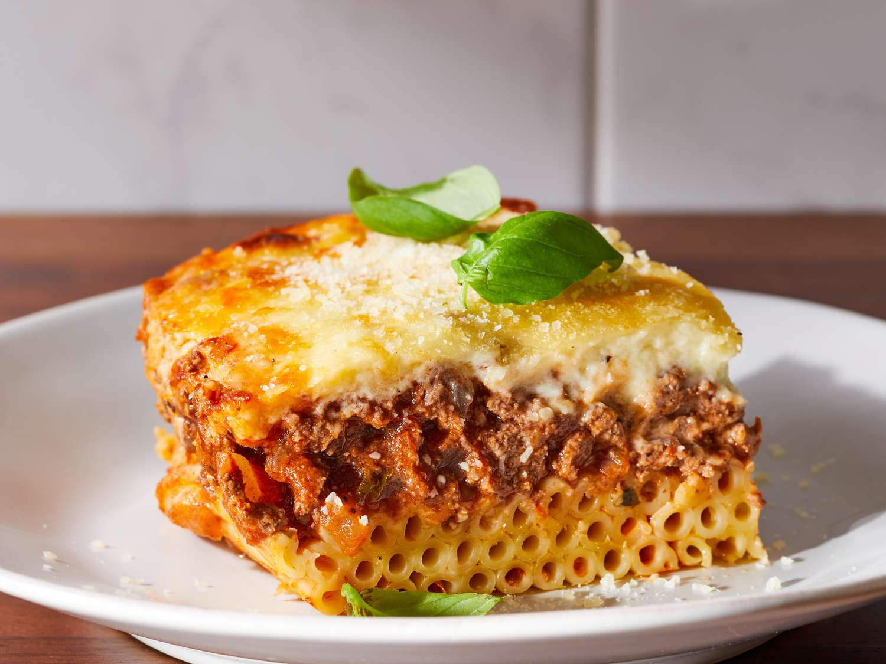

Pastitsio

Description
Greek lasagna! Can make it with lamb, pork, beef, or even chorizo. I prefer mostly lamb, with a bit of beef. Yum!
Ingredients
- 12 oz Penne pasta
- 1 lb Ground Lamb
- .5 lb Ground Beef
- Garlic
- Onion
- olive oil
- flour
- butter
- Milk
- Crushed tomatoes
- Red wine
- Bay leaf
- Allspice
- Nutmeg
- Salt
Steps
Get Started
- Preheat the oven to 350*
- Boil pasta until just underdone
- Chop garlic and onions
Make Meat Sauce
- Heat olive oil in pan
- Add Garlic and Onions and brown until soft
- Add Meat and cook through
- Add tomatoes, wine, bayleaf, allspice, nutmeg, and salt and pepper
- Simmer for 90 minutes
Build Pastitsio
- Ask John to make Bechamel out of the dairy and flour
- Put drained pasta in the bottom of a 13x9 pan
- Cover pasta with meat sauce, leaving a small amount out for snacking
- Clover meat sauce with a layer of bechamel.
- Place in the oven and bake for one hour.
Home